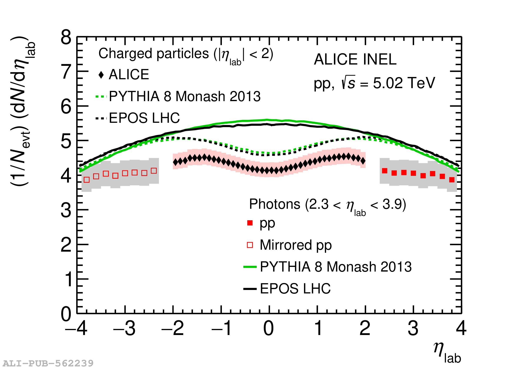
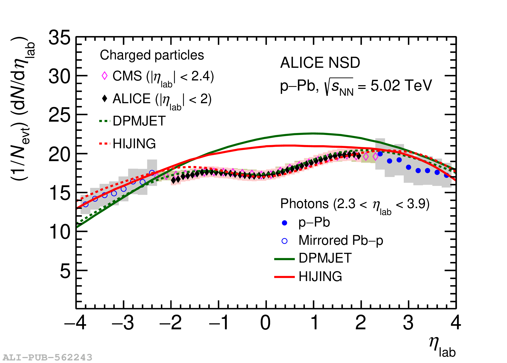

About research activity
My research focuses on experimental studies of ultra-relativistic heavy-ion collisions to investigate the properties of strongly interacting matter, quark-gluon plasma (QGP). Since 2018, I have been an active member of the ALICE Collaboration at the CERN Large Hadron Collider, contributing to detector calibration, data quality assurance, and physics analyses. Within ALICE, I have led measurements of inclusive photon and charged-particle production in pp, p-Pb, Pb-Pb, and light-ion (pO, OO, Ne-Ne) collisions, including first measurements using the upgraded Run 3 tracking system. My research work spans the understanding of particle production, collectivity in small systems, and jet physics, with results published in peer-reviewed journals and presented at national and international conferences. In the following, I briefly highlight my contributions to these activities.
Inclusive photon multiplicity in pp and p-Pb collisions:
I analysed the data recorded by the ALICE Photon Multiplicity Detector to study the multiplicity and pseudorapidity distributions of inclusive photons (P(Nγ) and dNγ/dηlab) at forward rapidities (2.3 < ηlab < 3.9) in pp and p--Pb collisions at a centre-of-mass energy of √sNN = 5.02 TeV. Since photons mostly originate from decays of neutral pions, these measurements complement existing results of charged-particle production. A comparative study of charged particles and inclusive photons reveals possible similarities and differences in the underlying production mechanisms for charged and neutral particles. The results were compared with various theoretical Monte Carlo event generators, none of which was able to reproduce the measured P(Nγ) in the studied multiplicity range. Centrality-dependent dNγ/dηlab were also obtained for the first time in p-Pb collisions. These measurements in both pp and p-Pb collisions provide an important baseline to interpret future results in Pb-Pb collisions.
My contributions: Lead analyser; Chair of paper committee; Responsible for data calibration; Primary editor of analysis note and manuscript systems.


Collectivity and flow observables
Study of long-range correlations and anisotropic flow coefficients to probe collective behavior.
Key result: Evidence of collective expansion in pp collisions.